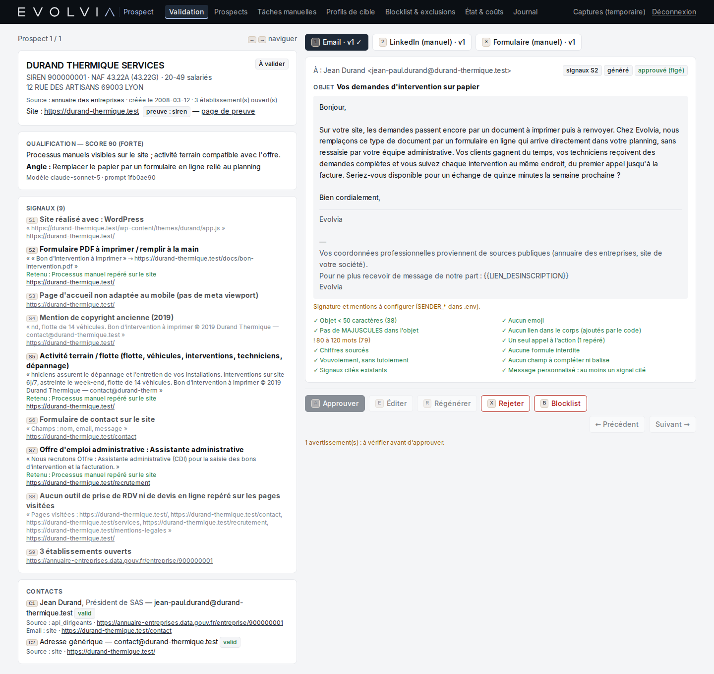

Un agent de prospection qui ne contacte personne sans accord humain
Pour Evolvia, j'ai construit un agent qui trouve des PME, lit leur site, relève des faits vérifiables, les qualifie avec Claude et rédige une première approche. Un humain valide chaque message. Le volume est resté faible, et l'agent est en pause depuis le 29/09.
- Rôle
- Conception et développement
- Période
- Septembre 2026
- Utilisateurs
- 4 comptes
- Cadre
- Outil interne Evolvia
01Le problème métier
Une jeune agence doit trouver ses premiers clients. Chercher des PME à la main, lire leur site et écrire un message personnalisé prend beaucoup de temps pour chaque entreprise. Les outils qui automatisent tout produisent des messages génériques, parfois faux, et posent des questions de RGPD.
Le besoin : préparer le travail de prospection, pas le remplacer. Trouver des entreprises plausibles, dire pourquoi avec des preuves, proposer un message, et laisser un humain décider.
02Ce que j'ai construit
- Sourcing depuis l'annuaire public des entreprises, filtré par profil de cible.
- Recherche du site avec preuve : le site n'est retenu que s'il cite le SIREN, ou le nom et le code postal de l'entreprise.
- Lecture respectueuse : robots.txt, une requête par seconde par site, six pages au plus, pages publiques uniquement.
- Signaux sourcés détectés par du code, pas par le modèle : formulaire à imprimer, offre d'emploi administrative, flotte de véhicules… Chaque signal garde son URL et sa citation.
- Qualification par Claude en sortie structurée (schéma zod) : quatre critères notés, chacun justifié par des signaux cités par leur identifiant. Un identifiant inventé fait rejeter la réponse.
- Rédaction d'un email, d'une tâche LinkedIn manuelle ou d'un message de formulaire, puis vérifications automatiques : aucune promesse chiffrée, aucun jargon, aucune formule toute faite, un seul appel à l'action.
- File de validation au clavier : approuver, éditer, régénérer, rejeter, exclure définitivement.


03Architecture
04Extrait de code
La règle « aucun envoi sans validation humaine » n'est pas seulement dans l'interface : elle est écrite dans la base. Même si un chemin de code se trompe, un brouillon ne peut pas passer en « approuvé » sans utilisateur actif et sans trace au journal.
-- Passage en « approved » : utilisateur actif + ligne draft.approve déjà écrite au journal
CREATE TRIGGER drafts_approve_requires_user BEFORE UPDATE OF status ON drafts
WHEN NEW.status = 'approved' AND OLD.status <> 'approved' AND (
NEW.approved_by IS NULL
OR NOT EXISTS (SELECT 1 FROM users u
WHERE u.id = NEW.approved_by AND u.disabled = 0)
OR NOT EXISTS (SELECT 1 FROM audit_log a
WHERE a.action = 'draft.approve'
AND a.object_id = CAST(NEW.id AS TEXT)
AND a.user_id = NEW.approved_by)
)
BEGIN SELECT RAISE(ABORT, 'approbation refusée : utilisateur authentifié et trace au journal requis'); END;05Résultat mesuré
Honnêtement : le volume est faible. L'agent a surtout prouvé que la chaîne fonctionne de bout en bout, de façon fiable. Il n'a pas encore prouvé qu'il apporte des clients : 57 brouillons attendent toujours une décision. Le coût par appel n'a pas été enregistré (la colonne prévue est restée à zéro).
06Ce que j'ai appris
- Le goulot n'était pas la machine, mais la validation. L'agent prépare plus vite que l'équipe ne décide. La prochaine version doit produire moins de brouillons, mieux ciblés, plutôt que plus.
- Mesurer le coût dès le premier appel. Sans coût par qualification, impossible de dire si l'agent est rentable. C'est le premier indicateur à brancher, avant même la mise en production.
- Faire vérifier le modèle par du code. Les signaux sont trouvés par des règles, le modèle ne fait que les interpréter et les citer. C'est ce qui rend ses réponses vérifiables.
- Réutiliser plutôt que recommencer. Cette logique a servi de base à la conception du module Prospection de l'Evolvia Hub.